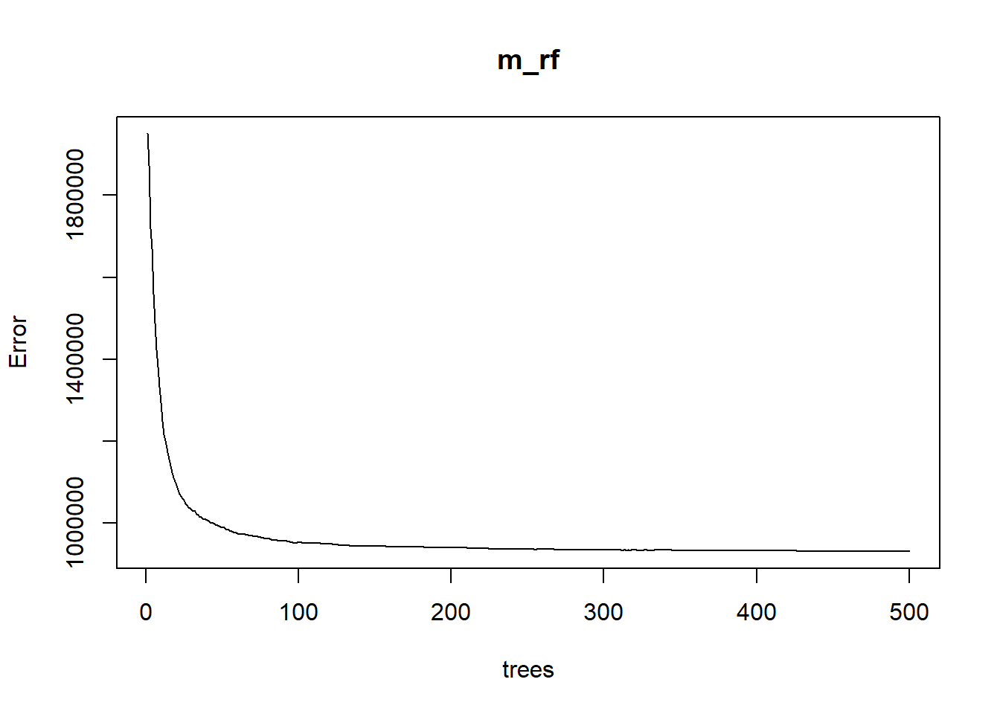
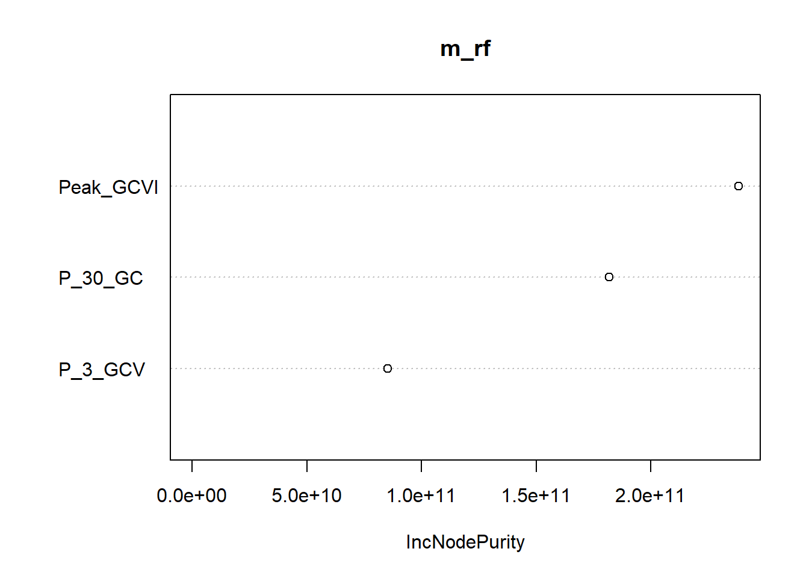
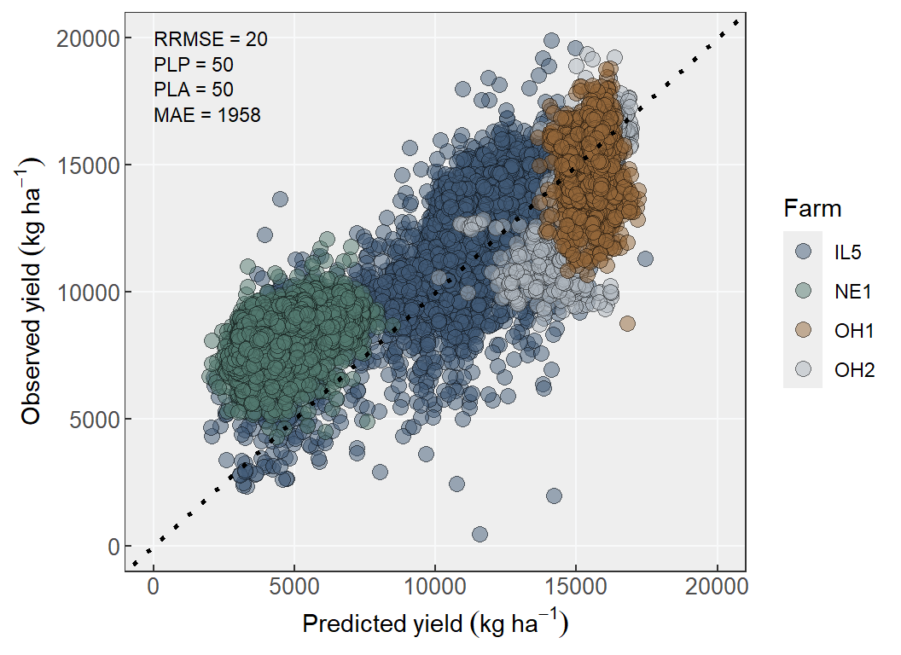
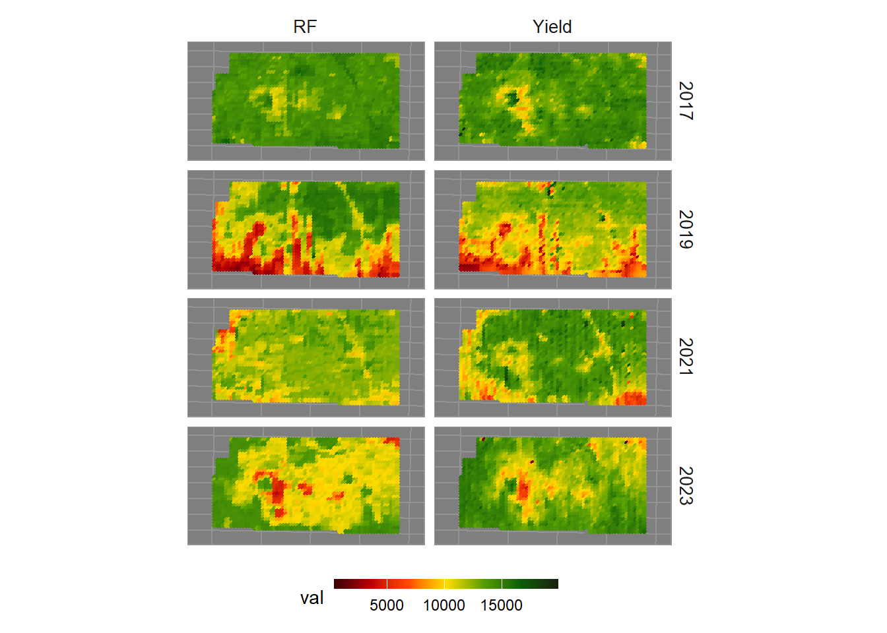

3 Yield prediction using sentinel-2
To upscale the assessment of spatio-temporal yield variation in relation to precipitation within a field, it is important to identify these patterns without relying solely on yield monitor data. This is crucial because not all farmers have access to many years of yield monitor data, yet this information is invaluable for optimizing field management.
3.1 Import libraries
# Packages to be used
library_names <- c("sp", # (Bivand et al., 2012)
"sf", # (Pebesma, 2018)
"randomForest", #(Liaw and Wiener, 2002)
"rsample", # Select pixel randomly
"tidyverse") # (Wickham et al., 2019)
# Iterate over each library name
for (lib_name in library_names) {
# Check if the library is already installed
if (!require(lib_name, character.only = TRUE)) {
# If the library is not installed, install it
install.packages(lib_name, dependencies = TRUE)
# Load the library
library(lib_name, character.only = TRUE)
} else {
# If the library is already installed, load it
library(lib_name, character.only = TRUE)
}
}3.2 Model
A random forest model was used to predict yield monitor data using the training dataset. Random forest, one of the most popular algorithms for yield prediction, is a machine learning technique used for estimating continuous response variables through regression analysis (Brieman, 2001). The model incorporates the Green Chlorophyll Vegetation Index (GCVI) at three key time points: the peak GCVI value, 30 days before the peak, and 30 days after the peak. The GCVI data were sourced from Sentinel-2, providing a pixel resolution of 10 m x 10 m within the field.


##
## Call:
## randomForest(formula = Yield ~ P_3_GCV + Peak_GCVI + P_30_GC, data = train_sample)
## Type of random forest: regression
## Number of trees: 500
## No. of variables tried at each split: 1
##
## Mean of squared residuals: 931793.9
## % Var explained: 94.33.3 Predict
The testing data were used to generate model predictions and evaluate its performance. The testing dataset includes four fields: one field with four years of maize yield monitor data, and three others with one year of yield data each. These fields were separated from the training dataset. Most of the other fields in the training dataset are related geographically, as they are located on the same farm (e.g., fields in Kansas). In contrast, the testing fields are located in different regions than those used in the training dataset.
3.4 Model evaluation
Obtain metrics
Model performance will be evaluated using the following metrics: Relative Root Mean Square Error (RRMSE%), Percentage Lack of Precision (PLP%), Percentage Lack of Accuracy (PLA%), and Mean Absolute Error (MAE, same units that variable of response). Metrics equations are below:
\[ RRMSE = \frac{\sqrt{\frac{1}{n} \sum \left(Pred_i - Obs_i \right)^2}}{\bar{Obs}} 100\ \]
\[ PLP = \frac{2 S_{Obs} S_{Pred} (1-r)}{\frac{1}{n} \sum{(Pred_i - Obs_i)^2} }* 100 \]
\[ PLA = \frac{(\bar{Obs}-\bar{Pred})^2 + (S_{Obs} - S_{Pred})^2}{\frac{1}{n} \sum{(Pred_i - Obs_i)^2} } *100 \]
\[ MAE = \frac{1}{n}\sum|Obs_i - Pred_i| \]
Lower values of RRMSE and MAE indicate better model performance. Similarly, for PLA and PLP, lower values reflect better model accuracy and precision. For instance, a PLP value of 90% and a PLA value of 10% suggest that the model predicts with higher accuracy than precision. For more details, refer to Correndo et al., 2021 and Correndo et al., 2022.
labs <- rf_pred %>%
unnest(c(RF,data )) %>%
dplyr::select(Yield, RF) %>%
pivot_longer(RF,names_to = "Model", values_to = "Pred") %>%
drop_na() %>%
ungroup() %>% group_by(Model) %>%
summarise(RRMSE = round(metrica::RRMSE(obs = Yield, pred =Pred)[[1]]*100,0),
PLP = round(metrica::PLP(obs = Yield, pred =Pred)[[1]],0),
PLA = round(metrica::PLA(obs = Yield, pred =Pred)[[1]],0),
MAE = round(mean(abs(Yield - Pred)),0) ) %>%
pivot_longer(-Model, names_to = "Metric", values_to = "Val") %>%
mutate(Label = paste(Metric, "=", Val))## Adding missing grouping variables: `ID`,
## `year`, `Farm`# Prepare label positions
num_metrics <- n_distinct(labs$Metric)
y_positions <- seq(20000, by = -1000, length.out = num_metrics)
labs <- labs %>%
mutate(y_position = seq(20000, by = -1000, length.out = num_metrics))Plot Observed vs predicted
Plot the observed yield monitor data against the predicted yield data to evaluate the model’s performance. Additionally, create maps for each year using both predicted and observed data to assess whether the model accurately captures the spatial distribution within the field.
Obs_pred_YP <- test_df %>%
dplyr::select(Farm,Crop, Year, ID, X,Y, Yield, Peak_GCVI) %>%
left_join(rf_pred %>%
unnest(c(data,RF)) %>%
dplyr::select(RF, Year), by = c("ID", "Year", "Farm") ) %>%
ggplot()+
geom_point(aes(x = RF, y = Yield, fill = Farm),
shape = 21, alpha =.5, size = 3)+
geom_abline(intercept = 0, slope = 1, linetype = "dotted", size = 1)+
scale_x_continuous(breaks = seq(0, 20000, 5000), limits = c(0,20000))+
scale_y_continuous(breaks = seq(0, 20000, 5000), limits = c(0,20000))+
geom_text(data =labs,
aes(x = 0, y = y_position, label = Label), hjust = 0, size =3) +
labs(y = expression(Observed~yield~(kg~ha^-1)),
x = expression(Predicted~yield~(kg~ha^-1)))+
scale_fill_manual(values = c("#415a77", "#52796f","#936639","#adb5bd"),
aesthetics = "fill")+
theme_bw()+
theme(strip.text = element_text(size = 11,family = "sans"),
strip.background = element_blank(),
panel.background = element_rect(fill = "#eeeeee"),
panel.grid = element_line(color = "#f8f9fa"),
panel.grid.minor = element_blank(),
axis.text = element_text(size = 10),
axis.title = element_text(size = 11),
axis.ticks.length=unit(-0.1, "cm"))
Obs_pred_YP
yearYields <- test_df %>%
dplyr::select(Farm,Crop, Year, ID, X,Y, Yield, Peak_GCVI) %>%
left_join(rf_pred %>%
unnest(c(data,RF)) %>%
dplyr::select(RF, Year), by = c("ID", "Year", "Farm") ) %>%
dplyr::filter(Farm == "IL5") %>%
pivot_longer(c(Yield, RF), names_to = "var",values_to = "val" ) %>%
ggplot() +
geom_sf(aes(color = val), size = 1)+
scale_color_gradientn(colors = c("#3b0001","#be0003","#ff4903","#ffdc00",
"#559d03","#075e07",'#161f0c')) +
facet_grid(Year~var)+
scale_y_continuous(expand = c(.15,.15))+
scale_x_continuous(expand = c(.15,.15))+
theme(axis.text = element_blank(),
axis.ticks = element_blank(),
strip.background = element_blank(),strip.text = element_text(size = 10),
panel.background = element_rect(fill = "#7f7f7f", color = "#949494"),
panel.grid = element_line(color = "#949494"),
legend.position = "bottom",
legend.text = element_text(size = 9),
legend.key.height= unit(.2, 'cm'),
legend.key.width= unit(.9, 'cm'))
yearYields
3.5 Save prediction
A shapefile was created containing both the observed yield monitor data and the predicted yield data using from Sentinel-2. Field IL5 was selected for this purpose because it was not used in training the models and includes four years of yield monitor data, starting from 2017, when Sentinel-2 data became available.
YM_df <- test_df %>%
dplyr::select(Farm,Crop, Year, ID, X,Y, Yield, Peak_GCVI) %>%
left_join(rf_pred %>%
unnest(c(data,RF)) %>%
dplyr::select(RF, Year), by = c("ID", "Year", "Farm") ) %>%
dplyr::filter(Farm == "IL5") %>%
rename(Ypred = RF,
Yobs = Yield,
crp = Crop) %>%
dplyr::select(-c(year,Farm))
sf::write_sf(YM_df, paste0("1_Data/5_YieldPred/YM_df", FIELD_NAME, "_Ypred.shp"),append = F)3.6 Reference
Bivand R, Pebesma E, Gomez-Rubio V (2013). Applied spatial data analysis with R, Second edition. Springer, NY. https://asdar-book.org/.
Breiman, Leo. “Random forests.” Machine learning 45 (2001): 5-32.
Correndo, A. A., Hefley, T. J., Holzworth, D. P., & Ciampitti, I. A. (2021). Revisiting linear regression to test agreement in continuous predicted-observed datasets. Agricultural Systems, 192, 103194.
Correndo, A. A., Rosso, L. H. M., Hernandez, C. H., Bastos, L. M., Nieto, L., Holzworth, D., & Ciampitti, I. A. (2022). metrica: an R package to evaluate prediction performance of regression and classification point-forecast models. Journal of Open Source Software, 7(79), 4655.
Liaw, A., Wiener, M. (2002). Classification and Regression by randomForest. R News 2(3), 18–22.
Pebesma E (2018). “Simple Features for R: Standardized Support for Spatial Vector Data.” The R Journal, 10(1), 439–446. doi:10.32614/RJ-2018-009, https://doi.org/10.32614/RJ-2018-009.
Wickham H, Averick M, Bryan J, Chang W, McGowan LD, François R, Grolemund G, Hayes A, Henry L, Hester J, Kuhn M, Pedersen TL, Miller E, Bache SM, Müller K, Ooms J, Robinson D, Seidel DP, Spinu V, Takahashi K, Vaughan D, Wilke C, Woo K, Yutani H (2019). “Welcome to the tidyverse.” Journal of Open Source Software, 4(43), 1686. doi:10.21105/joss.01686.